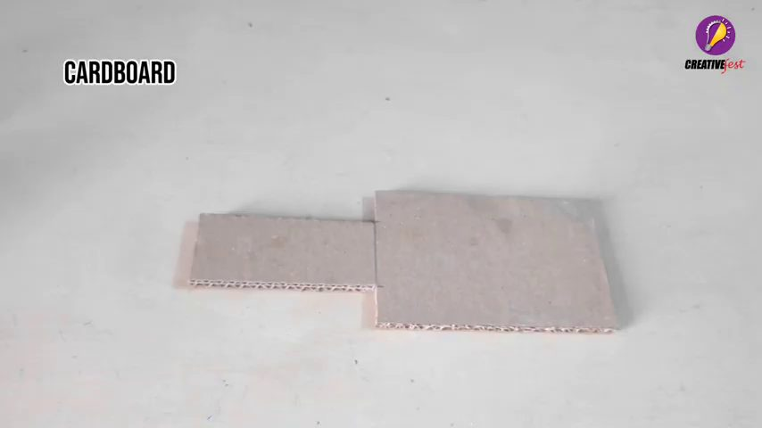
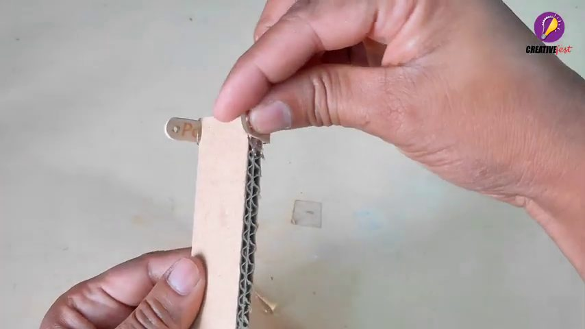
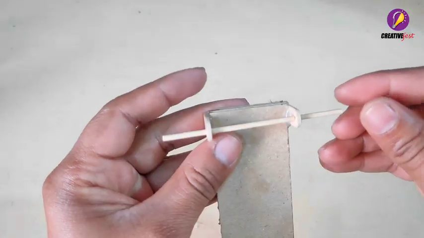
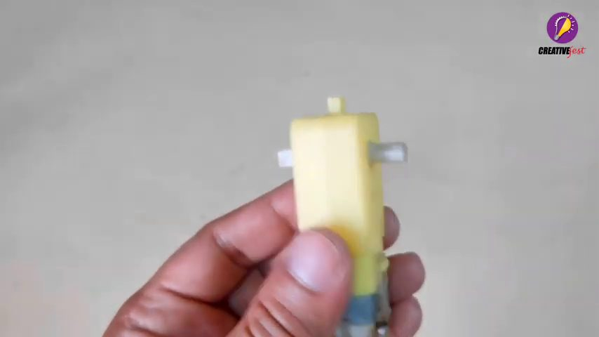
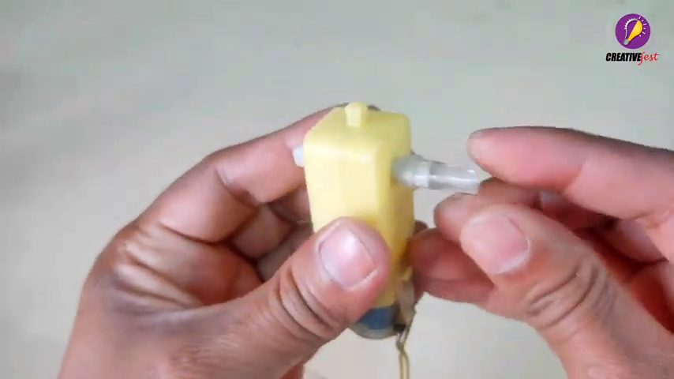
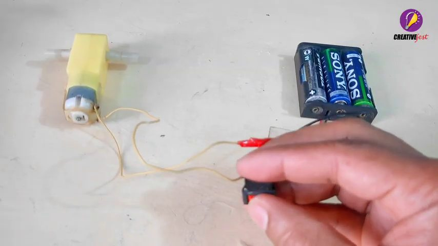
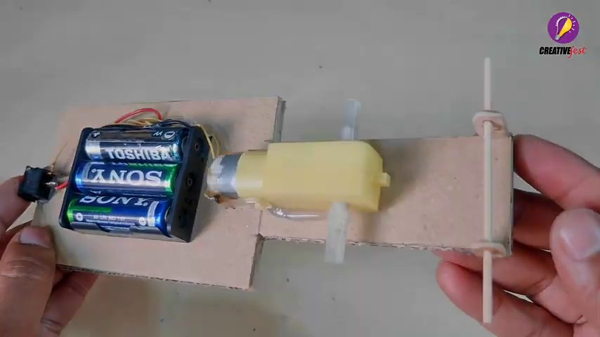
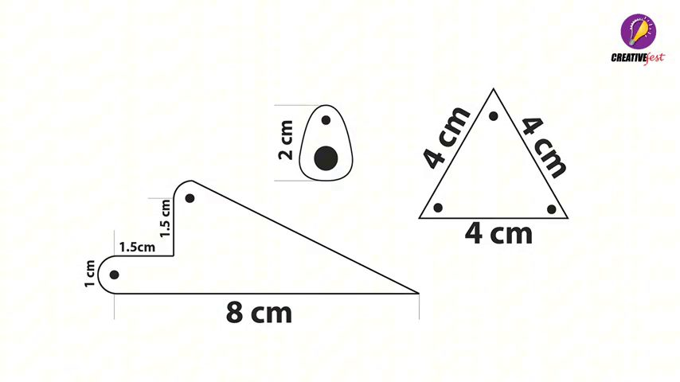
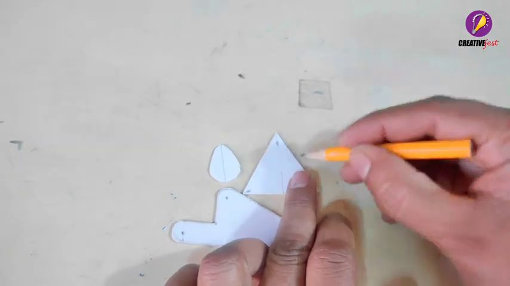
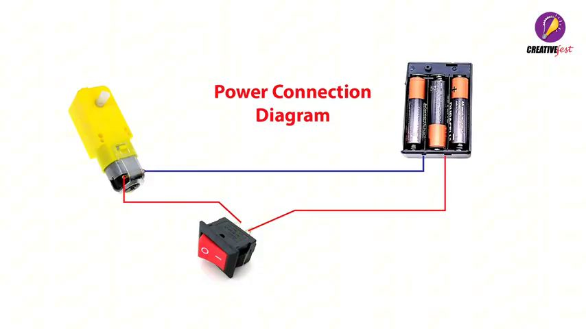

Materiais e ferramentas
Para a base/chassi e as peças articuladas das pernas.
Use como eixos, espaçadores e reforços, conforme o encaixe do modelo.
O motor amarelo mostrado no vídeo, com eixo de saída lento.
O vídeo mostra um suporte de três pilhas. Confira a tensão nominal do motor.
Para abrir e fechar o circuito sem retirar as pilhas.
Para fixar suportes e articulações. Use com supervisão de um adulto.
Régua, lápis, tesoura/estilete, furador e alicate de corte.
Dois fios para o motor e conexões do interruptor.
As dimensões exibidas no molde do vídeo estão reproduzidas na etapa 8. Confira o tamanho das peças no seu material antes de cortar.
Montagem passo a passo

Prepare as peças de papelão
Separe papelão firme e marque as peças que formarão o chassi e os braços articulados. O vídeo começa cortando e preparando pequenas tiras e placas.
Dica: mantenha as peças simétricas para o robô não ficar puxando para um lado.

Monte a primeira articulação
Una as tiras de papelão com pequenos pinos/eixos, deixando a junta livre para girar. Não cole as partes móveis entre si.
Faça furos alinhados e reforce a região ao redor deles para evitar que o papelão rasgue.

Faça os espaçadores e travessas
Prepare pequenos tubos ou pedaços de vareta para manter distância entre as placas. Teste o movimento manualmente: a articulação deve girar sem prender.

Prepare o motorredutor
Identifique o eixo de saída do motor amarelo. Ele transforma a rotação rápida do motor em um movimento mais lento e com mais força, adequado para movimentar as pernas.
Não force o eixo nem deixe cola entrar na caixa de engrenagens.

Adapte o acoplamento do eixo
O vídeo mostra a preparação de uma pequena peça plástica e sua fixação ao eixo. Ela funciona como ponto de ligação para transmitir a rotação à articulação.
Centralize o acoplamento e espere a cola esfriar antes de testar.

Prepare a alimentação e o interruptor
Separe o suporte de pilhas, o interruptor e os fios. Antes de instalar, confira a polaridade (+ e −) indicada no suporte.

Fixe os componentes na base
Posicione o porta-pilhas e o motor sobre a placa de papelão, como no quadro. Deixe o peso distribuído e reserve espaço para o eixo e as pernas se movimentarem.
Fixe firmemente, mas sem cobrir o eixo do motor nem esmagar os fios.

Recorte o molde das pernas
O vídeo apresenta um molde com medidas. Use-o como referência para desenhar as peças no papelão:
- Peça longa: base de 8 cm, degrau de 1,5 cm e alturas indicadas de 1 cm e 1,5 cm.
- Peça triangular: lados de 4 cm.
- Peça pequena arredondada: aproximadamente 2 cm.
Faça os furos nos pontos marcados no molde e repita as peças espelhadas para os dois lados.

Monte e alinhe as pernas
Recorte as peças, una-as pelos furos com pequenos eixos e confira se os dois conjuntos têm o mesmo comprimento. Deixe as articulações livres.
Antes de ligar o motor, gire o mecanismo com a mão para verificar se não há colisões com a base.
Ligação elétrica

O diagrama do vídeo mostra o interruptor em série com o motor e o suporte de pilhas: um polo do suporte vai diretamente a um terminal do motor; o outro polo passa pelo interruptor antes de chegar ao segundo terminal do motor.
Teste do robô
1. Teste sem carga
Levante o robô e acione o interruptor por poucos segundos. Observe se o eixo gira sem ruídos ou travamentos.
2. Teste no chão
Coloque-o em uma superfície plana e observe se as pernas alternam o apoio e impulsionam a base.
3. Corrija o alinhamento
Se ele girar para um lado, compare o comprimento das pernas, a posição dos furos e a distribuição das pilhas.
Checklist de montagem
0 de 7 etapas concluídas
Este guia foi organizado a partir dos quadros do vídeo enviado. Algumas uniões pequenas aparecem parcialmente encobertas pelas mãos; por isso, confira o encaixe visual no vídeo original antes de colar definitivamente.